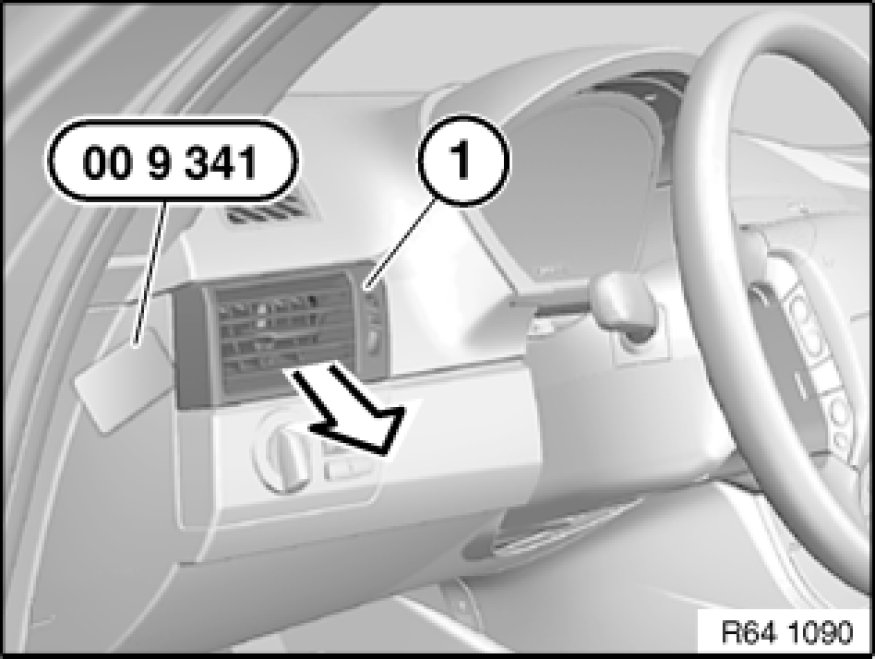
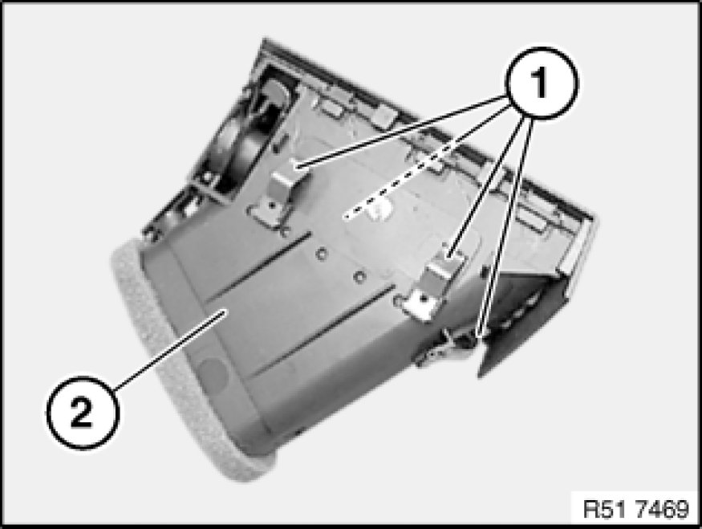

Removing and Installing or Replacing Left Fresh-Air Grille
64 22 135 - Removing and installing or replacing left fresh-air grille

Special tools required:
- 00 9 341

Fit special tool 00 9 341 at side as illustrated.
Lever out left fresh-air grill (1) all round and remove in direction of arrow.

Installation:
Catches (1) on fresh-air grill (2) must not be damaged or missing.